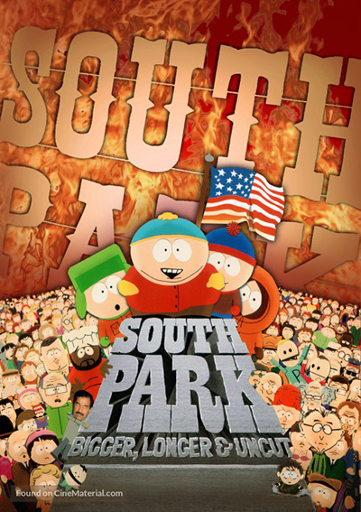
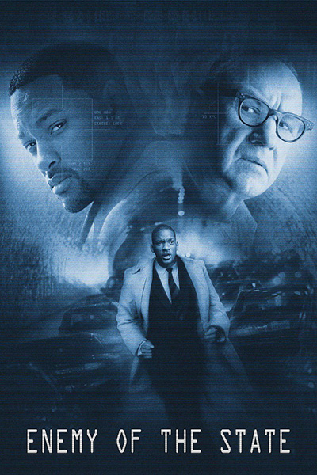
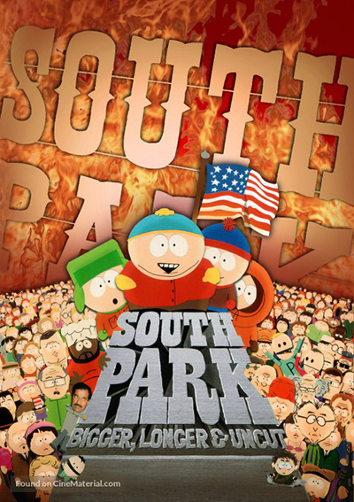
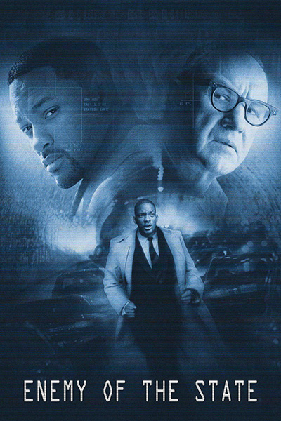

| Movies |
Synopsis |
| The Happening |
The film follows a group of four as they try to escape an inexplicable natural disaster. |
| South Park Biggger Longer and Uncut |
The film is primarily centered on themes of censorship and bad parenting; it also serves as a parody and satire of the animated films of the Disney Renaissance, musicals such as Les Misérables, and the controversy surrounding the show itself. |
| Enemy of the State |
The film tells the story of a group of NSA agents conspiring to kill a Congressman and the cover up that ensues after a tape of the murder is discovered. |
| Hotel Rwanda |
Based on the Rwandan genocide, which occurred during the spring of 1994, the film documents Rusesabagina's efforts to save the lives of his family and more than a thousand other refugees by providing them with shelter in the besieged Hôtel des Mille Collines.Hotel Rwanda explores genocide, political corruption, and the repercussions of violence. |
| Day of the Dead (1985 Film) |
The film is the third film in Romero's Night of the Living Dead series. Romero described the film as a "tragedy about how a lack of human communication causes chaos and collapse even in this small little pie slice of society." |
 


